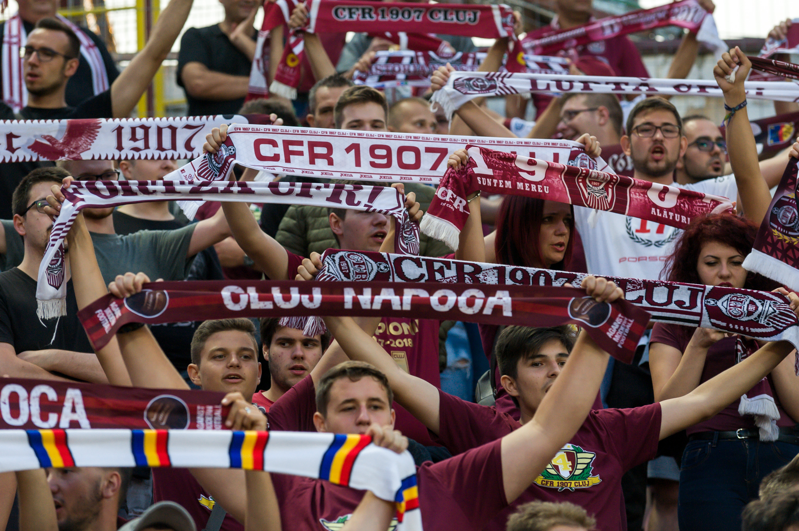

About the Club
CFR Cluj is a football club from the city of Cluj-Napoca, Romania, founded in 1907. Throughout its history, it has evolved from a modest railway team to one of the most successful clubs in Romanian football. The team has won multiple Liga I titles and has participated in European competitions such as the UEFA Champions League and the Europa League, with competitive performances against renowned teams. CFR Cluj is characterised by its consistency at domestic level and its ability to compete at international level, establishing itself as one of the leading names in Romanian football.
The Origin of CFR Cluj's Name and Nickname
The club's full name is CFR Cluj, where ‘CFR’ stands for ‘Căile Ferate Române’ (Romanian Railways), in reference to its origin as a team of railway workers in 1907. Over the years, the club has kept this name, reflecting its close relationship with Romania's railway industry.
The team's most common nickname is ‘Feroviarii’ (The Railwaymen), in honour of its railway roots. This nickname has endured over time and is a symbol of pride for the club's fans, who value the tradition and history behind the name.
Stadium
CFR Cluj plays its matches at the Stadionul Dr. Constantin Rădulescu, located in the city of Cluj-Napoca. The stadium, named after a former player and coach of the club, has a capacity of around 22,198 spectators. Opened in 1973, it has been renovated several times to meet international standards, hosting Liga I competitions and European tournaments such as the Champions League and Europa League.
The stadium features several sections, including Tribuna 1, Tribuna 2, and the Peluza Vișinie, where the most passionate fans gather. The Stadionul is an important symbol of the club and a fortress where CFR Cluj has achieved many of its successes.
Supporters
CFR Cluj has many fans in Cluj-Napoca, as well as in other parts of the country. Since the disbandment of major groups like "Patriots" and "Commando Gruia" in 2014, the supporters have unified under one large group called "Peluza Vișinie", which consists of former members of older groups such as "Romaniacs," "Juvenes," "Gruppo Gara," "Valacchi", "Pride 1907," "Nostra Famiglia," and "1907." There is also another group of older Hungarian supporters who sit in the Tribuna 1 section of the stadium. Although their support is less vocal and visible, they remain a constant part of the active fanbase.
The atmosphere at Dr. Constantin Rădulescu Stadium is unique, combining civility with excitement, making it a welcoming environment for families. Despite a fierce rivalry with Universitatea Cluj, which has sometimes led to violence among extreme fans, many supporters promote a sense of local patriotism that appreciates both clubs. This camaraderie allows fans to enjoy the vibrant football culture in Cluj without resorting to the hooliganism that has tainted the sport in other regions.

Cluj-Napoca
Cluj-Napoca, commonly known as Cluj, is the city where CFR Cluj is based. Located in the heart of Transylvania, it is one of the largest and most prosperous cities in Romania. With a rich history dating back to Roman times, Cluj-Napoca is today an important cultural, academic and economic centre of the country. The city is known for its vibrant university scene, historic architecture and cultural diversity. It is also a key location for Romanian football, being home to CFR Cluj, one of the country's most successful clubs
Champions League Appearances
CFR Cluj have made several notable appearances in the UEFA Champions League, starting with their debut in the 2008-09 season, where they stunned AS Roma with a 2-1 victory at the Stadio Olimpico. This result immediately drew attention to the Romanian side. In subsequent editions, such as 2010-11 and 2012-13, they faced tough opponents like Bayern Munich and Manchester United, holding their own in highly competitive group stages.
The 2012-13 campaign was particularly memorable, with a famous 1-0 win over Manchester United at Old Trafford. Although CFR Cluj has not advanced beyond the group stage, their competitive performances against some of Europe’s biggest clubs have raised their profile in European football, establishing them as a respected and resilient team.
.jpg)